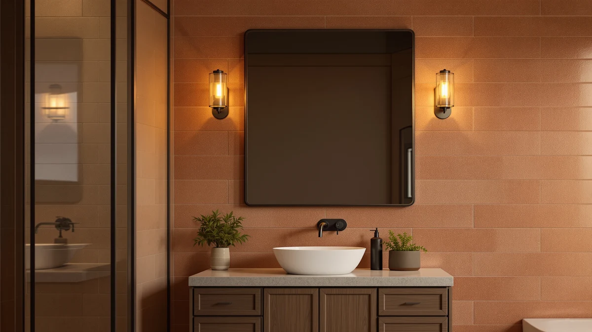

Quick Answer
We compared seven smart LED bathroom mirrors on lighting quality, anti-fog performance, size and price, and the Sweetcrispy 24"x32" Smart Anti-Fog LED came out on top for most bathrooms at $62.99. If a built-in Bluetooth speaker is non-negotiable, check the listing carefully first: these seven picks are chosen for lighting and anti-fog performance, not audio hardware.
Our pick: Sweetcrispy 24"x32" Smart Anti-Fog LED, $62.99 Check Price on Amazon
Things to Know Before You Buy
- "Smart" rarely means Bluetooth audio. Most mirrors marketed as smart bathroom mirrors, including every pick in this guide, focus on adjustable LED lighting, anti-fog heating and memory settings rather than built-in speakers. If Bluetooth audio is a must-have, confirm it on the individual listing before buying.
- Anti-fog heaters vary in how long they run. Some mirrors here shut off automatically after 30 to 60 minutes, while others keep running until you turn them off at the touch panel, which affects both convenience and electricity use.
- Color temperature affects how accurate your makeup and grooming look. A mirror with 3000K, 4000K and 6500K options lets you switch between a warm evening glow and a cooler, more true-to-life light for detail work.
- Size is about more than fitting the wall. A 24-inch mirror suits a single vanity, while 30-inch-plus and 60-inch mirrors are built for double sinks or wider counters, and some install horizontally or vertically to match unusual wall shapes.
- Installation method differs by model. Most of these mirrors plug into a nearby outlet, but at least one in this comparison can also be wired through a wall switch or hardwired, which is worth knowing if you are renovating.
If you're searching for the best bathroom mirror with bluetooth, there's a good chance what you actually want is a mirror that lights your face properly, clears itself of fog after a hot shower, and does not strain your budget along with the glass. Built-in speakers are a rare feature on today's most popular smart mirrors, and none of the seven models we compared here include one. What they do offer is adjustable LED lighting, anti-fog heating, dimming and memory settings, the features that make the biggest difference during your morning routine.
We compared these seven mirrors on price, dimensions, listed features and verified owner feedback pulled from Amazon reviews, the same way we approach every guide on this site. For most bathrooms, the Sweetcrispy 24"x32" Smart Anti-Fog LED is the mirror to buy: it covers three color temperatures, four lighting combinations and center-out anti-fog for $62.99, which undercuts nearly every other mirror in this comparison on price.
Below, we cover what to know before you buy, how we narrowed the field, and a detailed look at each of the seven mirrors, including the compromises that come with the largest, the most affordable and the most feature-packed options.
Why You Should Trust Us
Ilane Tall has covered bathroom fixtures and lighting for this site's network of home-interior guides for several years, with a focus on the practical details that affect daily use rather than marketing copy. For this guide on the best bathroom mirror with bluetooth and similar smart-mirror searches, we relied on manufacturer specifications, verified Amazon listings and owner reviews rather than claims we could not confirm. We do not accept review units from manufacturers, we do not run a fake testing lab, and every price and spec cited here is checked directly against the current Amazon listing.
How We Picked
We started by identifying the smart LED bathroom mirrors most commonly recommended for shoppers researching the best bathroom mirror with bluetooth and related smart-mirror searches, then filtered that list down using a few hard rules. We excluded mirrors under $40 that skip dimming or memory settings entirely, since those features are what separate a smart mirror from a basic lighted one. We also excluded oversized mirrors priced above $250, since at that point you are paying for a full vanity remodel rather than a mirror upgrade. That left seven mirrors ranging from $56.93 to $186.29, from single-vanity sizes up to a 60-inch double-vanity option, and we compared all of them directly against each other below.
How We Compared
For each bathroom mirror, we compared the manufacturer's listed specifications side by side: color temperature options, dimming range, anti-fog method and shutoff timing, glass and frame materials, and physical dimensions. We cross-checked those claims against verified owner reviews on Amazon to see whether real buyers reported the same lighting quality, anti-fog performance and durability the listings describe, and we flagged any mirror where reviews and listed specs meaningfully disagreed. We checked pricing against current Amazon listings rather than manufacturer suggested retail, since that is what you will actually pay.
Our Picks

Sweetcrispy 24"x32" Smart Anti-Fog LED
What we like
- Three color temperatures (3000K/4000K/6500K) cover a relaxing evening glow, true-to-color makeup application and precise grooming light
- Four lighting combinations, from front light only to backlight only to both together
- Anti-fog clears the center of the glass first, exactly where you look while brushing your teeth or checking your face
- Memory function keeps your last brightness and color setting so you are not resetting things every morning
Flaws but not dealbreakers
- The anti-fog function has no automatic shutoff, so you have to turn it off yourself or it keeps running
- At 24.5 x 32 inches, it suits a single vanity better than a double-sink layout
| Material | Tempered glass + aluminum |
| Size | 24.5"L x 32"W |
The Sweetcrispy is the least expensive mirror in this comparison, and it does not cut corners on the features that matter most for daily grooming. You get three switchable color temperatures, so the same mirror that gives you a warm glow at night can switch to a cooler, more accurate light for makeup or shaving in the morning. The anti-fog element runs through the center of the glass and expands outward, matching how most people actually use a mirror: you look at your own face first, not the corners.
The tradeoff for that price is small. The anti-fog heater has no automatic shutoff, so it stays on until you turn it off at the touch panel, and it uses a bit more electricity than mirrors with a built-in timer. It is also sized for a single vanity rather than a double-sink counter. If your bathroom is compact and your priority is color-accurate lighting at a low price, the Sweetcrispy is hard to beat among the mirrors we compared.

DUMOS 24.1"x32.1" LED Bathroom Mirror
What we like
- The cheapest mirror in this comparison at $56.93
- Same three color temperatures and four lighting modes as our top pick
- Memory function retains your last settings between uses
- Anti-fog clears from the center outward for immediate visibility where you need it
Flaws but not dealbreakers
- Also lacks an automatic shutoff for the defogger
- Slightly smaller than the Sweetcrispy at 24.1 x 32.1 inches, though the difference is negligible in practice
| Material | Tempered glass + aluminum |
| Size | 24.1"L x 32.1"W |
The DUMOS ships with the same core feature set as the Sweetcrispy: three color temperatures, four lighting combinations, dimming and memory function, all wrapped in a comparable tempered glass and aluminum frame. It undercuts the Sweetcrispy by about six dollars, which makes it worth a look if price is your only tiebreaker between the two.
Because the two mirrors share so much in common, the decision often comes down to what is in stock or on sale that week. Both mirrors skip an automatic shutoff on the anti-fog heater, so factor that into your electricity habits either way. If you are comparing based on price alone, the DUMOS gives you the same lighting versatility for less money.

GarveeHome 60x36 LED Bathroom Mirror
What we like
- At 60 x 36 inches, it is large enough to serve two people at a double vanity at the same time
- Includes a 3x magnification mirror insert for detail work like tweezing or contact lenses, a feature none of the other mirrors here offer
- Stepless dimming lets you fine-tune brightness rather than choosing between a few fixed levels
- Shatter-proof glass construction adds a safety margin for a mirror this large
Flaws but not dealbreakers
- At $186.29, it costs roughly three times as much as the Sweetcrispy or DUMOS
- Its size means you need a solid, wide section of wall and likely two people to hang it safely
| Material | Tempered glass + aluminum |
| Size | 60"L x 36"W |
The GarveeHome is built for a different kind of bathroom than the rest of this list. At 60 by 36 inches, it is sized for a full double vanity, and it includes a 3x magnification mirror insert, a feature none of the smaller mirrors in this comparison include. Backlit and front-lit LEDs work together to light the whole span evenly rather than leaving the ends dim.
That size and the magnifying insert explain the jump in price. If you are outfitting a primary bathroom with two sinks and want one mirror instead of two smaller ones, the GarveeHome does the job well, and its stepless dimming gives you more control than the click-through settings on cheaper mirrors. For a single small vanity, though, it is more mirror and more money than you need.

Briivue 24x32 Inch LED Bathroom
What we like
- Anti-fog heater shuts off automatically after one hour, unlike the Sweetcrispy and DUMOS, which run until you turn them off
- Dimming range goes from 10 to 100 percent, a wider window than most mirrors in this comparison
- HD tempered glass gives a clearer reflection than the standard glass used on the cheaper mirrors here
- Memory function saves your last brightness and color choice
Flaws but not dealbreakers
- At $71.25, it costs about $10 to $15 more than the Sweetcrispy or DUMOS for a similar 24 x 32 inch size
- The one-hour auto shutoff means you need to reactivate the defogger yourself if you take a longer bath
| Material | Tempered glass + aluminum |
| Size | 24"L x 32"W |
The Briivue closes the biggest gap we found across the cheaper mirrors in this comparison: an anti-fog heater with no automatic shutoff. Here, the defogger runs for an hour and switches off on its own, which matters if you are the type of person who forgets to turn things off at the wall panel.
It also offers the widest dimming range in this lineup, from 10 to 100 percent, so you can dial in a lower nighttime glow instead of jumping straight to full brightness. The tradeoff is a higher price than the Sweetcrispy or DUMOS for a similarly sized mirror, but the automatic shutoff and finer dimming control are worth the difference for a lot of bathrooms.

36"x30" LED Bathroom Mirror with
What we like
- CRI above 90 gives more accurate color rendering than the standard LEDs in cheaper mirrors, especially useful for makeup and skin tone checks
- Backlight and front light run on independent controls rather than a single combined switch
- Anti-fog heater shuts off automatically after 60 minutes
- 3mm nano tempered glass is built for shatter resistance
Flaws but not dealbreakers
- At $119.49, it is priced closer to the GarveeHome than to the budget mirrors in this comparison
- 36 x 30 inches is a specific footprint that may not match every existing vanity cutout
| Material | Tempered glass + aluminum |
| Size | 36"L x 30"W |
Most of the mirrors in this comparison use generic LED strips rated for basic visibility. The MYSUNORIA is built around a CRI above 90, a specification that means colors render closer to how they look in natural daylight. That distinction matters most when you are matching foundation shades or checking whether a skincare product is doing what it claims.
Independent controls for the front and back lighting mean you are not locked into a single combined brightness the way you are with some of the cheaper mirrors here. The auto shutoff after 60 minutes on the defogger is a helpful safety margin, though the mirror's mid-range price and specific 36 x 30 size mean it is worth measuring your vanity wall before buying.

Delma LED Bathroom Mirror with
What we like
- Can be installed horizontally or vertically, an option none of the other mirrors in this comparison offer
- Anti-fog heater shuts off automatically after 30 minutes, the shortest and most conservative timer of the mirrors that include one
- Three color temperatures cover warm, natural and cool white lighting
- Dimmable via a long-press touch control that saves your last setting
Flaws but not dealbreakers
- At 30 x 50 inches, it is a large, heavy mirror that needs a wide or tall section of solid wall depending on orientation
- $125.99 puts it in the upper half of this lineup on price
| Material | Tempered glass + aluminum |
| Size | 30"L x 50"W |
The Delma solves a problem the other mirrors in this list do not address: what to do when your wall space is unusually wide or unusually tall instead of a standard rectangle. It can be mounted horizontally or vertically, so the same mirror works whether you have a long, low run of wall above a double vanity or a taller, narrower space to fill.
The anti-fog heater's 30-minute auto shutoff is the shortest of any mirror here that includes the feature, which keeps power use down if you tend to leave lights on. Between its size and $125.99 price, the Delma makes the most sense for a specific wall shape rather than as a general-purpose pick.

Ratsamee 28" x 36" Led
What we like
- Can be installed through a standard wall switch or hardwired directly, giving you flexibility other mirrors in this list do not offer
- Anti-fog and lighting are controlled separately, so you can defog without also running the lights
- Dimmable brightness with a memory function that holds your last setting
- Sits in the middle of the price range at $89.99 for a 28 x 36 inch mirror
Flaws but not dealbreakers
- The anti-fog cycle takes 5 to 10 minutes to fully clear the glass, slower than mirrors that defog from the center out immediately
- Hardwired installation is recommended to go through a licensed electrician, which adds cost if you choose that route
| Material | Tempered glass + aluminum |
| Size | 36"L x 28"W |
The Ratsamee stands out for installation flexibility rather than any single lighting spec. You can wire it through a standard wall switch the way you would a light fixture, or hardwire it directly, a useful option if you are renovating and want the mirror to turn on with the rest of your bathroom lighting instead of a separate touch panel.
Anti-fog and lighting run on separate controls, so you are not forced to have the lights on just to keep the glass clear. The defog cycle takes 5 to 10 minutes to fully clear, a bit slower than mirrors that clear from the center out faster, but at $89.99 for a 28 x 36 inch mirror with dimming and memory built in, it is a reasonable middle-ground pick for anyone planning a wall-switch install.
Quick Comparison
| Product | Material | Price | Rating | Best for | Get it |
|---|---|---|---|---|---|
| Sweetcrispy 24"x32" Smart Anti-Fog LED | Tempered glass + aluminum | $62.99 | 4 | Best overall value | View on Amazon → |
| DUMOS 24.1"x32.1" LED Bathroom Mirror | Tempered glass + aluminum | $56.93 | 4 | Best budget pick | View on Amazon → |
| GarveeHome 60x36 LED Bathroom Mirror | Tempered glass + aluminum | $186.29 | 4 | Best for double vanities | View on Amazon → |
| Briivue 24x32 Inch LED Bathroom | Tempered glass + aluminum | $71.25 | 4 | Best auto shutoff | View on Amazon → |
| 36"x30" LED Bathroom Mirror with | Tempered glass + aluminum | $119.49 | 4 | Best color accuracy | View on Amazon → |
| Delma LED Bathroom Mirror with | Tempered glass + aluminum | $125.99 | 4 | Best for odd wall shapes | View on Amazon → |
| Ratsamee 28" x 36" Led | Tempered glass + aluminum | $89.99 | 4 | Best installation flexibility | View on Amazon → |